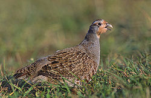
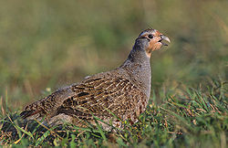

| Grey Partridge | |
|---|---|
|  | |
| Conservation status | |
| Binomial name | |
| Perdix perdix (Linnaeus, 1758) |
| Grey Partridge | |
|---|---|
|  | |
| Conservation status | |
| Binomial name | |
| Perdix perdix (Linnaeus, 1758) |
The Grey Partridge, Perdix perdix, also known as the English Partridge, Hungarian Partridge, or Hun, is a gamebird in the pheasant family Phasianidae of the order Galliformes, gallinaceous birds. The species has been successfully introduced to many parts of the world for shooting, including vast areas of North America, where it is most commonly known as Hungarian partridge, or just "Hun". Widespread and common throughout its large range, the Grey Partridge is evaluated as Least Concern on the IUCN Red List of Threatened Species. This partridge breeds on farmland across most of Europe into western Asia, and has been introduced widely into North America. They are quite common in some areas of southern Canada and the northern United States.
The Grey Partridge is a rotund bird, 28–32 cm long, brown-backed, with grey flanks and chest. The belly is white, usually marked with a large chestnut-brown horse-shoe mark in males, and also in many females. Hens lay up to twenty eggs in a ground nest. The nest is usually in the margin of a cereal field, most commonly Winter wheat. The only major and constant difference between the sexes is the so-called cross of Lorraine on the tertiary coverts of females – these being marked with two transverse bars, as opposed to the one in males. These are present after around 16 weeks of age when the birds have moulted into adult plumage. Young Grey Partridges are mostly yellow-brown and lack the distinctive face and underpart markings. The song is a harsh kieerr-ik, and when disturbed, like most of the gamebirds, it flies a short distance on rounded wings, often calling rick rick rick as it rises. They are a seed-eating species, but the young in particular take insects as an essential protein supply. During the first 10 days of life, the young can only digest insects. The parents lead their chicks to the edges of cereal fields, where they can forage for insects. They are also a non-migratory terrestrial species, and form flocks outside the breeding season.
Though common and not threatened, it appears to be declining in numbers in some areas of intensive cultivation such as Great Britain, probably due to a loss of breeding habitat and possibly food supplies. Their numbers have fallen in these areas by as much as 85% in the last 25 years. Efforts are being made in Great Britain by organizations such as the Game & Wildlife Conservation Trust to halt this decline by creating Conservation headlands. In 1995 it was nominated a Biodiversity Action plan species In Ireland it is now virtually confined to the Lough Boora reserve in County Offaly. (see UK BAP).

.jpg){kind=link}
{kind=link}